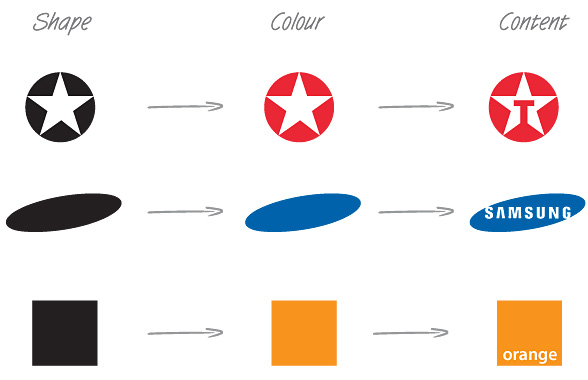

- matplotlib에서 custom colormap을 만들고 적용하는 방법입니다.
- 3부로 나누어 1부에 해당하는 본 글에서는 시각적 디자인을, 2~3부에서는 코드 위주로 정리합니다.
1. Visual Perception
Practical Rules for Using Color in Charts
Color Sequences for Univariate Maps: Theory, Experiments, and Principles
Visual Perception and the Sequence of Cognition
CIELAB color space
- 시각화
visualization는 숫자로 표현된 데이터를 우리 눈으로 받아들이도록 변환하는 과정입니다.- 시각화 결과물을 접하는 사람이 어떻게 받아들일지를 생각해야 합니다.
- 그럴려면 우리 눈이 사물을 어떻게 받아들이는지,
- 우리 뇌는 이를 어떻게 해석하는지에 대한 이해가 필요합니다.
눈앞에 어떤 물체나 도형이 나타났을 때, 시각적 인지 순서는 다음과 같습니다.
- 형태 > 색 > 글자의 순으로 인지합니다.
Quiz: 왜 짝퉁은 오리지널 로고의 형상과 색조를 유지하고 글자같은 디테일만 바꿀까요?
 - 또한 우리는 색의 명도 변화를 색상 변화보다 더 잘 받아들입니다.
- 따라서 데이터의 증감을 명도 변화로 표현하는 것이 효율적입니다.
- 형태 > 색 > 글자의 순으로 인지합니다.
일부 용어가 혼동됩니다.
- 명도(brightness, value)와 휘도(luminance, intensity, gray-level)가 혼용됩니다.
- 사전적으로 명도는 관찰자의 주관적 밝기로 측정이 불가능한 반면, 휘도는 관찰자가 광원으로부터 인지하는 에너지의 양($$cd/m^2$$)입니다.
- 여기서는 같은 의미로, 더 익숙한 명도를 사용하도록 하겠습니다.
- 정확히는 CIELAB color space의 Lightness입니다.
2. Colormap Selection
Choosing Colormaps in Matplotlib
Matplotlib Colormap (2)
Rainbow 컬러맵은 우리를 어떻게 호도하는가
과학 시각화: 색상은 우리가 무엇을 볼지 어떻게 결정하는가
- Perpetually Uniform Sequential이 정석입니다.
- viridis, plasma, inferno, magma, cividis가 있습니다.
- 이들 컬러맵의 index와 명도의 관계를 그려보면 다음과 같습니다.
- 데이터값의 차이와 명도의 차이가 정확히 비례하여 데이터를 정직하게 표현할 수 있습니다.
- 밝기 차이가 세 배인 두 지점은 데이터 값 차이도 세 배입니다.
- viridis, plasma, inferno, magma, cividis가 있습니다.
Sequential Colormap도 괜찮은 선택입니다.
- 단색조의 명도 변화를 통해 익숙함과 편안함을 느낄 수 있습니다.
- 정확하지는 않지만 데이터값의 변화를 전반적으로 잘 반영합니다.
Rainbow 계열은 자제합시다.
- 현란한 색을 사용하면 그림이 풍성해보이는 효과가 있습니다.
- rainbow, jet 등이 자주 쓰이지만 데이터 전달력 관점에서는 적절하다고 하기 힘듭니다.
- 좀 낯설기는 하지만 cubehelix가 그래도 괜찮은 명도 분포를 보여주고 있습니다.
3. Colormap Customization
Creating Colormaps in Matplotlib
matplotlib.colors.ListedColormap
matplotlib.colors.LinearSegmentedColormap
기상청: 레이더 합성영상
컬러맵은 연속된 색상의 나열입니다.
- 데이터의 값 변화를 색상에 대응시켜 표시하는 것도 좋지만, 데이터의 특정 값이 의미를 가진다면 그에 맞추어 색상을 변화시키는 것도 방법입니다.
- 아래 그림은 기상청 제공 2020년 8월 5일 16:35 현재 대전, 충남의 강수 현황입니다.
- 시간당 강수량 구간을 색상으로 나누고, 각 색상 구간은 다시 명도로 나뉘어 있습니다.
- 구간이 바뀔때마다 명도가 크게 바뀌어 다소 혼란스럽지만 폭우 구간이 잘 드러납니다.
matplotlib에서는 컬러맵 작성 기능을 제공합니다.- 기존에 정의된 색상을 나열하여 컬러맵을 조합할 수 있고,
numpy.array를 활용하여 새로운 컬러맵을 생성하거나 기존 컬러맵을 수정할 수 있습니다.- 이 때 ListedColormap과 LinearSegmentedColormap두 명령어를 사용합니다.
- 상세한 설명과 코드는 다음 글로 미루고, 여기서는 같은 데이터에 컬러맵을 바꿔가며 적용한 예시를 보여드리겠습니다.
시각화에 사용한 데이터는 지상 40m 지점의 연평균 풍속입니다.
3.1. “rainbow” and “cubehelix”
- 첫 번째로, 습관적으로 사용하는 rainbow를 적용했습니다.
- 어려서부터 배운 빨주노초파남보라 익숙하고 편한 느낌이 있습니다.
- 고지대가 잘 보이는 한편 해안선을 따라 한반도 전체가 밝게 빛나는 느낌이 납니다.
- 시선이 백두대간에 처음 꽂혔다가 자꾸 해안선을 따라 빙빙 돌게 됩니다.
- 가장 밝은 곳이자 주변과의 명도차가 가장 큰 구간이기 때문에 그렇습니다.
- 이 그림을 보는 사람이 해안선이 아닌 내륙의 풍속 분포에 집중해주기를 원합니다.
- 컬러맵의 명도로 데이터의 크기를 알 수 있는 cubehelix를 적용했습니다.
- 해안선이 어두워지면서 한층 누그러지고, 시선을 덜 빼앗깁니다.
- 내륙지방의 디테일이 강화되어 들여다보기 좀 더 편해집니다.
3.2. “viridis” with Color range adjustment
- Perceptually Uniform Sequential인 viridis를 적용한 결과입니다.
- 많은 경우에 적용되는 matplotlib의 기본 컬러맵입니다.
- 사실 처음에 봤을 때는 무지개에 익숙한터라 상당히 낯설었습니다.
- cubehelix에 비해 색상 변화가 단조로워 더 어둡게 느껴집니다.
- 특히 해안선이 잘 보이지 않아서 육지와 바다가 잘 구분되지 않습니다.
- 색공간이 낭비되고 있는 느낌이 듭니다.
- 자동으로 감지한 최대값은 11 정도이지만 화면에 그만큼 밝은 부분이 많이 보이지 않습니다.
- 그 바람에 전체적으로 그림이 어두워지고 내륙지방의 디테일이 잘 살아나지 않습니다.
- histogram을 그려서 데이터 범위를 확인해봅니다.
- 9 이상의 데이터가 극히 드뭅니다. 이 정도는 뭉뚱그려도 실보다 득이 클 것입니다.
- 컬러맵의 범위를 조정해줍니다.
- 최대 범위를 9로 설정해서 그 이상은 모두 같은 색으로 표시되도록 합니다.
- 전체적으로 그림이 밝아지고 디테일이 살아났습니다.
3.3. Colormap Customization
제가 전달하고자 하는 데이터는 육지 풍속입니다.
- 해안선 부분에서 바다와 육지의 색이 비슷해서 잘 구분이 되지 않습니다.
- 바다에만 선택적으로 gist_gray를 적용해서 흑백으로 처리합니다.
- gist_gray는 viridis와 명도차가 있어 같은 데이터가 다른 밝기를 가지지만, 여기서는 바다에 눈길을 주지 않으려는 의도이므로 관계없습니다.
- 바다가 더 어두워져서 육지에 집중하기에 한결 더 편해졌습니다.
도메인을 살짝 얹어보겠습니다.
- 기상청의 예보 용어 기준으로, 바람이 4 m/s 미만일 때는 바람이 약하다고 하고 4 이상 9 m/s 미만일 때는 바람이 약간 강하다고 합니다.
- 그리고 앞서 데이터를 뭉개버렸던 9 m/s 이상 구간이 바람이 강하다고 되어 있습니다.
- 구간이 다르니 아래 구간과 같은 색으로 표현하지 않는게 좋겠습니다.
- 이 세 구간을 다른 색을 사용해서 표현하겠습니다.
- 기상청의 예보 용어 기준으로, 바람이 4 m/s 미만일 때는 바람이 약하다고 하고 4 이상 9 m/s 미만일 때는 바람이 약간 강하다고 합니다.
명도대비와 색상대비를 동시에 활용합니다.
- 바람이 약한 구간과 약간 강한 구간은 지도에서 차지하는 면적이 넓고, 내부의 값 변화도 크기 때문에 다른 색상 안에서 명도대비를 적용합니다.
- 다만 기상청 강수량 시각화와 달리 데이터 구간이 많지 않고 비교적 온화한, 즉 경각심을 느낄 필요가 없는 구간이므로 심리적으로 부담이 없는 녹색과 청색을 선택합니다.
- 파랑이 녹색보단 조금 더 차가운 느낌이므로 위에 올립니다. 바람불면 추우니까요. :)
- Greens_r과 Blues_r이 합쳐지는 구간에서 명도를 점프시켜 경계가 잘 보이도록 했습니다.
- viridis에 비해 정량적 표현력이 희생되었지만 구간 표현력은 강화되었습니다.
9 m/s 이상의 바람이 강한 구간은 데이터 양이 매우 적어 잘 안보일 듯 합니다.
- 이를 보완하기 위해 녹색, 청색과 보색 관계에 있는 색을 택합니다.
- 그러나 빨강은 흰색 위에 놓이기에 너무 어둡고 경계의 느낌이 매우 강합니다.
- 명도가 높고 덜 부담스러운 분리 보색
split complementary, magenta를 선택합니다.
최종 결과물입니다.
- 바다와 육지가 무채색과 유채색으로 분리되었고
- 풍속 구간에 따라 색상으로 구분되었으며,
- 각 구간 내에서는 명도를 이용해 데이터를 읽을 수 있습니다.
- 매우 적은 최고풍속구간은 지도와 스케일바에 튀는 색으로 강조되었습니다.